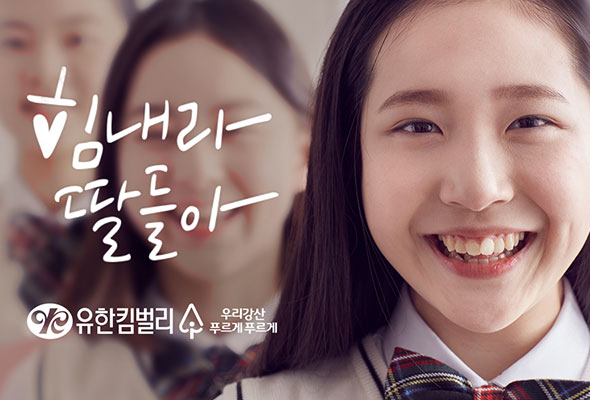

유한킴벌리 다양성과 포용
유한킴벌리는 평등하고 공정한 사회, 여성들의 인권보호와 성장, 그리고 사회인식 변화를 위해 노력하고 있습니다.
여성임파워먼트를 위해 유엔 글로벌 콤팩트(UN Global Compact)의
여성역량강화원칙(Women’s Empowerment Principles) 7개 조항에 연계하여 노력하고
있으며,
2019년 여성역량강화 LEAD 기업으로 선정되었습니다.
다양한 생리대를 통한 제품 선택권 증대
여성들을 위한 편리한 제품을 제공하여 사회적으로 터부시되던 용어와 생리대 사용을 문화로 만들어 여성들의 삶을 개선하는데 기여했습니다.
올바른 고객안전 정보 제공- 생리대 성분 공개
2017년 생리대 휘발성 화합물(VOC) 이슈에 대한 소비자 불안감 해소를 위해 학계, 정부, 관련 기업 등과 함께 노력하고 있으며, 브랜드 사이트에 전성분을 공개하고 있습니다.
여성의 자립을 돕는 사원들의 기부캠페인
2005년부터 유한킴벌리 사원들은 매년 4월 한국여성재단이 주관하는 딸들에게 희망을 100인 기부릴레이에 참여하고 있습니다. 사원들이 참여로 조성된 기금은 여성들의 자립과 성평등 문화확산을 위한 사업에 사용되고 있습니다.
여성과 청소년들을 위한 생리대 기부
22016년부터 시작한 힘내라 딸들아 생리대 100만패드 기부 캠페인은 생리대를 확보하지 못해 겪게 될 인권문제를 돕기 위해 청소녀들과 여성들을 위해 기부하고 있습니다.
NGO여성활동가 리더십 고양
여성활동가들을 대상으로 젠더 관점과 리더십 역량 증진을 위하여 2007년부터 한국여성재단 한국여성단체연합-대학-기업의 협업 모델로 평생학습 기회제공의 장학사업을 운영하고 있습니다. (석사과정, 리더십과정)
기업여성 리더십 및 역량강화 노력
여성의 리더십 및 다양성 가치를 존중하여 여성대표성 확립을 위한
노력을 기울이고 있습니다. 또한, 가족친화정책 및 스마트워크의 진화를
통해 일가정 양립을 위한 문화확산에도 지속적으로 노력하고 있습니다.
대전공장 푸른숲 어린이집
2011년 3월 개원하였으며, 현재까지 정원 34명 중 평균 30명 정도의 정원 가까운 운영으로, 만 0세부터 4세까지의 아이들을 보유하고 있습니다.
2013년
보건복지부로부터 95점의 우수한 점수로 평가인증을 획득한데 이어, 2016년 재인증
시에는 99.37점으로 만점에 가까운 점수로 평가 재인증을 받았습니다. 학부모
만족도 또한 5점 만점에 4.5 이상을 기록할 만큼 안정적인 운영을 하고 있습니다.
환경리더로서의 성장을 돕는 숲 체험 캠프 운영
유한킴벌리는 쳥소녀들의 환경리더십 증진을 위하여 숲체험캠프(그린캠프)를 1988년부터 운영하고 있습니다. 3박 4일동안 숲과 환경의 중요성 뿐 아니라, 숲에서 자신들의 길을 찾을 수 있도록 하는 이 프로그램은 환경부로부터 인증받은 환경교육프로그램입니다.
신혼부부들에게 가정 내 성평등 의식 제고
2009년부터 서울YWCA와 함께 시작한 생명사랑 신혼부부학교는 저출생 시대에 신혼부부들에게 가족 내 성평등 의식 제고 및 차이를 인정하고, 실천을 통한 건강한 가족 모델을 제시하고 있습니다.
청소년들을 위한 월경교육
1971년 월경용품 개발과 함께 성교육을 시작한 유한킴벌리가 여성의 더 나은 생활을 위해 청소녀들을 위한 초경교육과 인식개선 캠페인을 49년간 지속해 오고 있습니다. 초중고 학생과 부모를 위한 온라인 교육 컨텐츠를 제공하고 있습니다.